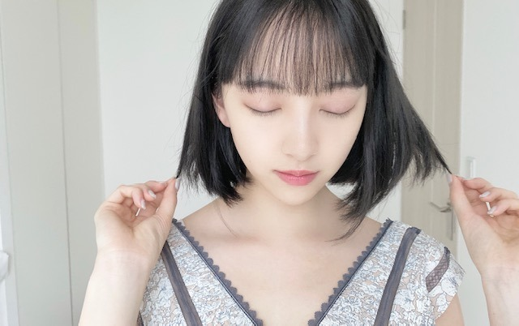
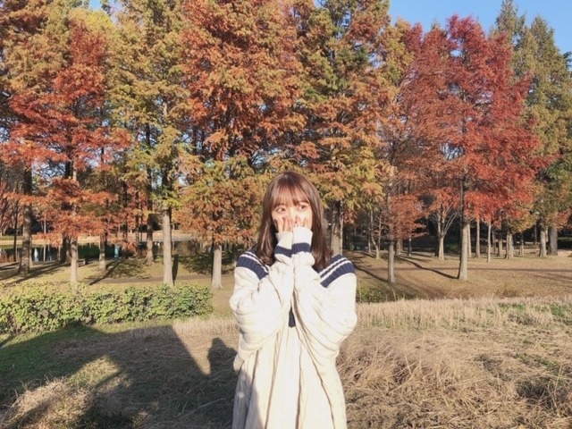

2020/0506Wedわらいかた
昨日母の日じゃなかったんですね
てっきり母の日だと勘違いしていて
お母さんに手紙を渡して
母の日だからメイクしてあげる〜って
メイクをしてあげて2ショットも撮って
母の日お母さん喜んでくれたかなぁと
思ってたんですけど
寝る直前にネットでたまたま
母の日までもうすぐ!
というのをみて
...え？
となりまして...
日にちを
すっかり勘違いしていました
お母さんに今日じゃないやん!
って言ったら
そうよ笑 と言われました
何で言ってくれなかったのか...
また改めてしよう

食べ過ぎでもちもちほっぺになってきました~
ということで
お家でダンスをしたり腹筋したり
炭水化物食べないようにしたり
長風呂で汗かいたりしてます...
気をつけないと!
あと最近地震が多いので
防災避難グッズの準備を
みなさんしましょう!
堀家も今日改めて震災に備えて
色々準備しています☺︎



やはり黒髪が落ち着きますね
今日は
9時間9人9の扉を
久しぶりにやってます
マインクラフトも早く始めたいし
荒野行動も逃げるばっかりで
いつも5位とか微妙な順位だし
全然倒せてないので上手くなりたいです
あとTikTok面白くてずっと見てられます
何であんなに面白いんだろう...
いつかやりたいな

ではは
2020/05/06 19:54
コメント(383)
みおなと荒野行動したい！
未央奈～
今日の東京ドーム配信もとってもよかった！
アンダーブロックで泣きました(*ToT)
感動するんだよ～！
自然と出てきます～。
改めて、演出も壮大でいいね！！
未央奈も大活躍♪
変顔もしてたね！
明日も楽しみにしてま～す☺️
おやすみおな～(*´～｀*)
今日の東京ドーム配信もとってもよかった！
アンダーブロックで泣きました(*ToT)
感動するんだよ～！
自然と出てきます～。
改めて、演出も壮大でいいね！！
未央奈も大活躍♪
変顔もしてたね！
明日も楽しみにしてま～す☺️
おやすみおな～(*´～｀*)
優しい、あなた好き☆
ブログ更新ありがとう！
新しいゲーム見つかりましたか？笑
荒野行動自分もやってます
最初は難しいと思うけど慣れてくると
上位になれるので頑張ってください
これからも応援してます！
新しいゲーム見つかりましたか？笑
荒野行動自分もやってます
最初は難しいと思うけど慣れてくると
上位になれるので頑張ってください
これからも応援してます！
未央奈かわいい！
ずっとショートカットでいてほしい！！
ずっとショートカットでいてほしい！！
マインクラフトおすすめ！
確かに日付感覚ずれるよね
連続更新ありがとう。写真集楽しみです。
こんばんは
昨日、未央奈がとうもろこし食べてる動画を見て、とうもろこしが食べたくなったのでさっきスーパーで買ってきて食べました。
とうもろこし美味しいよね～
さて、母の日先走っちゃったみたいだね(笑)
なんとも平和なご家族です
まぁ～減るもんじゃないし、むしろいいことじゃない？
もちもちほっぺも可愛いけどね～
お水たくさん飲むといいって聞くよ
代謝がよくなるみたいで。
地震怖いよね
自分結構ビビりだから昨日３時くらいまで眠れなかった(笑)
気を付けないとね
備えあれば憂いなし！
防災グッズや備蓄の準備もそうだし、いざというとき冷静に動けるように、心の準備もしないとね。
昨日、未央奈がとうもろこし食べてる動画を見て、とうもろこしが食べたくなったのでさっきスーパーで買ってきて食べました。
とうもろこし美味しいよね～
さて、母の日先走っちゃったみたいだね(笑)
なんとも平和なご家族です
まぁ～減るもんじゃないし、むしろいいことじゃない？
もちもちほっぺも可愛いけどね～
お水たくさん飲むといいって聞くよ
代謝がよくなるみたいで。
地震怖いよね
自分結構ビビりだから昨日３時くらいまで眠れなかった(笑)
気を付けないとね
備えあれば憂いなし！
防災グッズや備蓄の準備もそうだし、いざというとき冷静に動けるように、心の準備もしないとね。
未央奈〜
母の日とこどもの日が一緒に来ると思ってたの？笑そうしたら父だけ仲間外れじゃん笑笑
っていうか、お母さんにメイクしてあげたり手紙あげたり優しすぎる！お母さんとっても嬉しかっただろうなぁ
ずっとお家にいるから自分磨きサボりまくりで最近は髪の毛も乾かしてない 反省します 未央奈ちゃん偉い、、流石です！
地震怖いよね！昨日の夜は緊急地震速報が怖すぎて地震が起きたの気づかなかったけど
あと、写真が毎回可愛すぎる♡黒髪ボブがこの世で1番似合うのは未央奈ちゃんだと思ってます！
母の日とこどもの日が一緒に来ると思ってたの？笑そうしたら父だけ仲間外れじゃん笑笑
っていうか、お母さんにメイクしてあげたり手紙あげたり優しすぎる！お母さんとっても嬉しかっただろうなぁ
ずっとお家にいるから自分磨きサボりまくりで最近は髪の毛も乾かしてない 反省します 未央奈ちゃん偉い、、流石です！
地震怖いよね！昨日の夜は緊急地震速報が怖すぎて地震が起きたの気づかなかったけど
あと、写真が毎回可愛すぎる♡黒髪ボブがこの世で1番似合うのは未央奈ちゃんだと思ってます！
ほっぺはぷにぷに位でいいと思う
ブログ更新ありがとうございます。
最近地震が多くてとても不安で心配です。こういう時期に災害が起きることが自分の中で怖いことなので大きな災害はいつ起こるかわからないので起きる前に防災と、コロナウイルス収束を願って毎日過ごしています。
この不安の中で未央奈のブログを見てものすごく励まされました。ありがとうございます。
こういう時だからこそ、母親にもしっかり感謝をしたいなと思います。
長文すみませんでした。
最近地震が多くてとても不安で心配です。こういう時期に災害が起きることが自分の中で怖いことなので大きな災害はいつ起こるかわからないので起きる前に防災と、コロナウイルス収束を願って毎日過ごしています。
この不安の中で未央奈のブログを見てものすごく励まされました。ありがとうございます。
こういう時だからこそ、母親にもしっかり感謝をしたいなと思います。
長文すみませんでした。
こんばんは。ブログ更新ありがとう！
母に感謝するのは、母の日じゃなくても全然いいし、きっと母はとっても嬉しくてわざと教えてくれなかったのだな(ΦωΦ)ﾌﾌﾌ…
更新ほんとに嬉しいです。写真もたくさんで。黒髪似合ってるね。また楽しみに待ってます。ありがとう(^_^)ノ
母に感謝するのは、母の日じゃなくても全然いいし、きっと母はとっても嬉しくてわざと教えてくれなかったのだな(ΦωΦ)ﾌﾌﾌ…
更新ほんとに嬉しいです。写真もたくさんで。黒髪似合ってるね。また楽しみに待ってます。ありがとう(^_^)ノ
毎日投稿ありがとうございます！うっかりしているみおなさんが大好きです！！！
ほっこり堀親子エピソードはすべらんなぁw
仲良しで平和だなー☆
良い笑顔♪
もちもちほっぺかー。え、さわりたいんですけど。いや冗談ですすみません(；・∀・)
痩せすぎもあまり良くないよー。がんばるとしたら2～3㎏ぐらい調整すれば充分じゃないかと！
地震こわいよね。今日は雷がすごいし。
備えあれば憂いなしってやつだね。準備するに越したことはないよね。
最近は防災グッズいろいろあるからありがたいよね！今から気をつけておこう！
黒髪良いよやっぱり！もんぞーは茶髪だねw
良いコンビだ。堀北コンビに匹敵するかもね。みおもんコンビ？w
ブログ更新ありがとう！乃木坂のライブはやっぱり良いね！曲はもちろん、MCのコーナーとかも楽しいしね。
ずっと変顔している子とは思ってないから安心してーw
でも変顔の公約はこれからも続けてー♪
でわー
仲良しで平和だなー☆
良い笑顔♪
もちもちほっぺかー。え、さわりたいんですけど。いや冗談ですすみません(；・∀・)
痩せすぎもあまり良くないよー。がんばるとしたら2～3㎏ぐらい調整すれば充分じゃないかと！
地震こわいよね。今日は雷がすごいし。
備えあれば憂いなしってやつだね。準備するに越したことはないよね。
最近は防災グッズいろいろあるからありがたいよね！今から気をつけておこう！
黒髪良いよやっぱり！もんぞーは茶髪だねw
良いコンビだ。堀北コンビに匹敵するかもね。みおもんコンビ？w
ブログ更新ありがとう！乃木坂のライブはやっぱり良いね！曲はもちろん、MCのコーナーとかも楽しいしね。
ずっと変顔している子とは思ってないから安心してーw
でも変顔の公約はこれからも続けてー♪
でわー
初めてコメントさせていただきます。昨日の夜中の、いや今日の明け方の地震を予言した方がいたみたいです。その方は11日にも地震が起こると予言しているらしいので私も対策バッチリしました。本当にこのご時世に地震は日本崩壊しそうなのでこないで欲しいですね。
堀ちゃんブログ更新ありがとう〜！！
僕も最近TikTokはまってます笑
いつかやってくれると嬉しいです！
僕も最近TikTokはまってます笑
いつかやってくれると嬉しいです！
未央奈ブログ更新ありがとう！
なんで母の日が昨日だと思ったのか謎すぎて面白い。お母さんとのやりとりもほのぼのして良い親孝行だね。
目をつむってるのも可愛い！全然痩せてると思うけど、家にいると運動不足になりがちだものね。気をつけよう。
最近地震多いよね。僕も防災気をつけよう。
昨日のインスタの写真であれ？と思ったけどやっぱり黒髪にしたんだね。黒髪も似合ってて可愛い！
今日の東京ドームライブ配信の未央奈も良かったよ！
では！
なんで母の日が昨日だと思ったのか謎すぎて面白い。お母さんとのやりとりもほのぼのして良い親孝行だね。
目をつむってるのも可愛い！全然痩せてると思うけど、家にいると運動不足になりがちだものね。気をつけよう。
最近地震多いよね。僕も防災気をつけよう。
昨日のインスタの写真であれ？と思ったけどやっぱり黒髪にしたんだね。黒髪も似合ってて可愛い！
今日の東京ドームライブ配信の未央奈も良かったよ！
では！
更新ありがとう！みおなの黒髪すきー！
こんばんは。ブログ更新ありがとうございます。
母の日かー。私の母親とは仲があまり良くないので、毎年何もしません。還暦とか喜寿のお祝いはしましたが・・・。
今の若い人たちは2011年の大震災に平成不況に今回のコロナ禍と困難に直面しても、冷静に、我慢するところは我慢して、偉いなと思います。スマホやゲーム機はそんな若い人たちへのプレゼントと言っても良いかなと思います。
ゴールデンウイークももう終わり、まだまだSTAY HOMEは続きますね。季節の変わり目、お互いに体調に気を付けましょう。
ではまた。
母の日かー。私の母親とは仲があまり良くないので、毎年何もしません。還暦とか喜寿のお祝いはしましたが・・・。
今の若い人たちは2011年の大震災に平成不況に今回のコロナ禍と困難に直面しても、冷静に、我慢するところは我慢して、偉いなと思います。スマホやゲーム機はそんな若い人たちへのプレゼントと言っても良いかなと思います。
ゴールデンウイークももう終わり、まだまだSTAY HOMEは続きますね。季節の変わり目、お互いに体調に気を付けましょう。
ではまた。
ブログ更新ありがとう！！！
お母さんと仲良いんだね、読んでて微笑ましくなります
写真集買います！どうか体調に気をつけてね
あ、あとライブ配信の乃木坂公式のTwitter見たよ！
英語で言ってるのよかった！未央奈らしいね笑
リプ欄には変なこと言ってる人いたけど気にしなくていいからね、これからも未央奈は未央奈らしくいてください
ではは
お母さんと仲良いんだね、読んでて微笑ましくなります
写真集買います！どうか体調に気をつけてね
あ、あとライブ配信の乃木坂公式のTwitter見たよ！
英語で言ってるのよかった！未央奈らしいね笑
リプ欄には変なこと言ってる人いたけど気にしなくていいからね、これからも未央奈は未央奈らしくいてください
ではは
堀ちゃん！
荒野行動フレンドになりたいです！
Byド下手のJKより。。。
荒野行動フレンドになりたいです！
Byド下手のJKより。。。
堀ちゃんお疲れ様でーす！
母の日を間違えるのは可愛いですね〜。お母さんも嬉しかったと思いますよー。今日の目覚めは最悪でした…急にでっかい落雷が来まして目が覚めてしまいました。(ホント)なぜか自分が逃走中に出てる夢を見てハンターを振り切りまくり残りあと数分ってところで目が覚めてしまうという最悪な目覚めでした…今日はどんな夢を見るんだろう？明日はオンライン授業あるから早めに寝まーす！
それじゃまたねー！
母の日を間違えるのは可愛いですね〜。お母さんも嬉しかったと思いますよー。今日の目覚めは最悪でした…急にでっかい落雷が来まして目が覚めてしまいました。(ホント)なぜか自分が逃走中に出てる夢を見てハンターを振り切りまくり残りあと数分ってところで目が覚めてしまうという最悪な目覚めでした…今日はどんな夢を見るんだろう？明日はオンライン授業あるから早めに寝まーす！
それじゃまたねー！
未央奈～ こんにちは
連日のブログ更新ありがとうございます。
大型連休も今日まで、と言いつつも自粛生活で全く曜日感覚がマヒしていますが、日も何日かわからなくなってしまいますよね。
でも、「母の日」と「こどもの日」は間違えませんよ。「母の日」のつもりで、お手紙お母さんに渡してたけど、プレゼントじゃなくて良かったですよ。プレゼントだったら、それって、「こどもの日」の催促になってしまいますもん。２３歳になっても‥‥なんて思われるところでしたから、まぁ、結果的には良かったのかも‥‥。
「母の日」は第２日曜日、ということで、仕切り直しを‥‥。
今日も「おうちでドーム」、楽しませていただきました。
もちろんＤＶＤを買ってますからいつでも見られるわけですが、３０万人のファンとともに、メンバーのみなさんとも「共有」できたこと、本当にうれしく思います。
そして、写真集発売日に「レコメン」の出演決定、おめでとうございます。楽しみにしたいと思います。
連日のブログ更新ありがとうございます。
大型連休も今日まで、と言いつつも自粛生活で全く曜日感覚がマヒしていますが、日も何日かわからなくなってしまいますよね。
でも、「母の日」と「こどもの日」は間違えませんよ。「母の日」のつもりで、お手紙お母さんに渡してたけど、プレゼントじゃなくて良かったですよ。プレゼントだったら、それって、「こどもの日」の催促になってしまいますもん。２３歳になっても‥‥なんて思われるところでしたから、まぁ、結果的には良かったのかも‥‥。
「母の日」は第２日曜日、ということで、仕切り直しを‥‥。
今日も「おうちでドーム」、楽しませていただきました。
もちろんＤＶＤを買ってますからいつでも見られるわけですが、３０万人のファンとともに、メンバーのみなさんとも「共有」できたこと、本当にうれしく思います。
そして、写真集発売日に「レコメン」の出演決定、おめでとうございます。楽しみにしたいと思います。
みおなちゃんこんばんは！昨日の深夜の地震の警報で目覚めたー最近地震多すぎ！荒野行動久々にやると微妙な順位で終わるんだよね俺も
ここ四日は感染者が二桁だからこの調子で減ってほしいー みおなちゃんも気をつけてねー
ここ四日は感染者が二桁だからこの調子で減ってほしいー みおなちゃんも気をつけてねー
未央奈ちゃんーー！更新ありがとうーー！！
荒野行動逃げるのも戦術！笑
YouTubeとかで上手い人の動画見たり解説動画見たりすると上手くなるよ！
それで上手くなるとさらに楽しくなるよ！頭使って立ち回りとかするし
ま、楽しければ何でもいい！笑
てゆうか、未央奈ちゃんがTikTok見たり荒野行動したりしてるって聞くと、未央奈ちゃんもちゃんを身近に感じられる気がする！笑
TikTokって天才的に永遠に見てられるくらい面白いよねーー
何でなんだろうねーほんと笑
未央奈ちゃんがやったらそれはもう何回再生することか笑笑
毎日更新してくれてほんとにありがとうございます！
一日の終わりに見ると癒されて嬉しいです！大好きです！
ゆっくり休んでねーーー！！
荒野行動逃げるのも戦術！笑
YouTubeとかで上手い人の動画見たり解説動画見たりすると上手くなるよ！
それで上手くなるとさらに楽しくなるよ！頭使って立ち回りとかするし
ま、楽しければ何でもいい！笑
てゆうか、未央奈ちゃんがTikTok見たり荒野行動したりしてるって聞くと、未央奈ちゃんもちゃんを身近に感じられる気がする！笑
TikTokって天才的に永遠に見てられるくらい面白いよねーー
何でなんだろうねーほんと笑
未央奈ちゃんがやったらそれはもう何回再生することか笑笑
毎日更新してくれてほんとにありがとうございます！
一日の終わりに見ると癒されて嬉しいです！大好きです！
ゆっくり休んでねーーー！！
母の日に手紙を渡すのはすごく素敵です。
お母さんは二重の喜びを感じれますね。
勘違いしちゃう未央奈ちゃんは可愛いいし、それもまた魅力です。
何気ない日常が、勘違いでかけがえのない大切な思い出の1枚になりましたね。
未央奈ちゃんのブログは、心が温まります。ありがとう。
洋服も黒髪もよく似合っていて、とても可愛いです。
確かに最近大きな地震が多いので、防災避難グッツの準備した方ががいいですね。
日々ブログ更新してくれて、ありがとうございます。
お母さんは二重の喜びを感じれますね。
勘違いしちゃう未央奈ちゃんは可愛いいし、それもまた魅力です。
何気ない日常が、勘違いでかけがえのない大切な思い出の1枚になりましたね。
未央奈ちゃんのブログは、心が温まります。ありがとう。
洋服も黒髪もよく似合っていて、とても可愛いです。
確かに最近大きな地震が多いので、防災避難グッツの準備した方ががいいですね。
日々ブログ更新してくれて、ありがとうございます。
ブログ更新ありがとう！
こんにちは、u8です。
母の日勘違いしてたんですね〜笑
「母の日だから」とは言わずに実行したのかな？
でも、こどもの日と母の日が同じでもイイですね。互いに感謝し合う日でね。個人的には、自分が男だから、それなら父の日も〜と思いますが…(まだ父ではありません笑)
堀ちゃん、いつもブログもまめに更新してくれて、ありがとう！
次のブログも楽しみにしてますね〜！
こんにちは、u8です。
母の日勘違いしてたんですね〜笑
「母の日だから」とは言わずに実行したのかな？
でも、こどもの日と母の日が同じでもイイですね。互いに感謝し合う日でね。個人的には、自分が男だから、それなら父の日も〜と思いますが…(まだ父ではありません笑)
堀ちゃん、いつもブログもまめに更新してくれて、ありがとう！
次のブログも楽しみにしてますね〜！
ブログ更新ありがとう！！！
母の日間違えたこと自分もあります笑
意外と家族でも恥ずかしいもんでした！笑
というより、荒野行動やってたの！？知らなかった！
僕も結構ハマっちゃって、やり込んでます笑
一緒に荒野行動やってる夢でも見ておきます笑
お互い地震気をつけましょ！！
ではは
母の日間違えたこと自分もあります笑
意外と家族でも恥ずかしいもんでした！笑
というより、荒野行動やってたの！？知らなかった！
僕も結構ハマっちゃって、やり込んでます笑
一緒に荒野行動やってる夢でも見ておきます笑
お互い地震気をつけましょ！！
ではは
未央奈〜！ブログ更新ありがとう！！
未央奈の黒髪超可愛い！！
TikTokも見てみたいなぁ
未央奈の黒髪超可愛い！！
TikTokも見てみたいなぁ
お母さんと仲良しで良き(*´ω｀*)
ブログ更新ありがとう！
ボブ未央奈が大好きです！
ボブ未央奈が大好きです！
頻繁にブログ更新してくれてありがとう
いつも楽しみに読んでます！！
未央奈ちゃんのTikTok待ってるね！！
いつも楽しみに読んでます！！
未央奈ちゃんのTikTok待ってるね！！
母の日エピソード笑ってしまいましたw
もちもちほっぺ可愛いです！
少し残してくださいw
もちもちほっぺ可愛いです！
少し残してくださいw
未央奈ちゃん、ブログ更新ありがとう!
母の日には僕も何かしてあげようと思います!
地震も多くなっているので未央奈ちゃんもお気を付けて!
母の日には僕も何かしてあげようと思います!
地震も多くなっているので未央奈ちゃんもお気を付けて!
母の日間違い残念でした。お母様の優しいですね。
そんな未央奈にこの曲を送ります、布袋寅泰「ロシアンルーレット」
ぜひ聞いて下さい。
そんな未央奈にこの曲を送ります、布袋寅泰「ロシアンルーレット」
ぜひ聞いて下さい。
こんばんは❗
母の日もうすぐですね(^-^)
質問なんですがこの時期のおすすめの洋服を、教えてくだい(*･∀･*)
母の日もうすぐですね(^-^)
質問なんですがこの時期のおすすめの洋服を、教えてくだい(*･∀･*)
未央奈さんブログ更新ありがとう。未央奈さん母の日は来週の日曜日です。でもお母さんと仲良くすることは良いことです。そういうドジな未央奈さん可愛い❤️じゃん。癒される。一番したの写真アップトゥーボーイで未央奈さんの写真集先行カットのだね。堀未央奈さんの大ファンとして捨てないで取って有るから。未央奈さんしっかりしてると思うよ。またコロナ収束したら絢音さんとかきいちゃんと旅行に誘ってみたら？ と思うよ。ゲームはやらないけど趣味は鉄道です関東地方と関西地方と日本全国の鉄道詳しいよ。名古屋の名鉄と地下鉄わからん 。お休みなさい
更新ありがとうございます
マイクラは本当に面白いです
意外と奥が深いですよ
是非始めてください
また待ってます
マイクラは本当に面白いです
意外と奥が深いですよ
是非始めてください
また待ってます
堀ちゃんこんばんは！
ほっこり堀家のエピソード、顔が緩んでしまいます(o^^o)
お母さんは知りながらも昨日を母の日として受け入れようと思ってたんですかね、お母さんもお優しい( ´ ▽ ` )
僕も堀ちゃんを見習って、母の日は言葉でも行動でも感謝の意をちゃんと表します！
思ってるだけじゃ伝わらないですもんね、きちんと伝える努力をします(^^)
さてさて、昨日今日と東京ドームライブの配信見てます！
配信してくれたり、今日はメンバーのみんなが一緒に見ながらツイートしてくれたり、ほんとに楽しくて幸せな時間です！(o^^o)
こんなにも幸福感を感じられて、ほんとに乃木坂のことが好きだなぁと実感する日々です(*´ー｀*)
そしてこんなにも幸せにしてくれるメンバーのみんな、スタッフの方々に心から感謝を伝えたいです、本当にありがとうございます(o^^o)
そしてライブはやっぱり映像で見ても熱くなりますね！
どの曲も最高でしたが、今日は特に「命は美しい
」が頭から離れません(^^)
曲のシリアスな雰囲気が、正面を向く瞬間の堀ちゃんの表情と融合して鳥肌でした…！
ライブの映像を見るたびに思うんですが、堀ちゃんはが纏う雰囲気って、曲によって変わるんですよね( ´ ▽ ` )
例えばインフルや命は迫力を感じるぐらいの猛々しさ、ハダサマとかは眩いぐらいの明るさ、ワタボコリならちょっと切ない優しさ、みたいな
表情や動き方でですかね？もしくは曲に入り込んでいるから？
とにかく様々な雰囲気を感じます(^^)
同じ堀ちゃんなのに、こんなに違う雰囲気を感じるんだ…っていつもびっくりして、それが非日常感を感じさせてくれて、堀ちゃんを見ているのが凄く楽しいです！(o^^o)
明日で配信は最後になってしまいますが、めっちゃ楽しみです！
たくさん堀ちゃん見よーっと( ´ ▽ ` )♩
ステイホーム期間はしっかりした運動ができないので、体がムニっとしてくるとちょっと焦りますよね(^^;)
僕も腹筋とか、出来る筋トレしてます！
でも、堀ちゃんのもちもちほっぺは、それはそれでとても魅力的ですよ( ´ ▽ ` )♩
今日もブログありがとうございます！更新されてるのを見るといつもほんとに嬉しい(o^^o)
ではは！またコメントさせてくださいー！
ほっこり堀家のエピソード、顔が緩んでしまいます(o^^o)
お母さんは知りながらも昨日を母の日として受け入れようと思ってたんですかね、お母さんもお優しい( ´ ▽ ` )
僕も堀ちゃんを見習って、母の日は言葉でも行動でも感謝の意をちゃんと表します！
思ってるだけじゃ伝わらないですもんね、きちんと伝える努力をします(^^)
さてさて、昨日今日と東京ドームライブの配信見てます！
配信してくれたり、今日はメンバーのみんなが一緒に見ながらツイートしてくれたり、ほんとに楽しくて幸せな時間です！(o^^o)
こんなにも幸福感を感じられて、ほんとに乃木坂のことが好きだなぁと実感する日々です(*´ー｀*)
そしてこんなにも幸せにしてくれるメンバーのみんな、スタッフの方々に心から感謝を伝えたいです、本当にありがとうございます(o^^o)
そしてライブはやっぱり映像で見ても熱くなりますね！
どの曲も最高でしたが、今日は特に「命は美しい
」が頭から離れません(^^)
曲のシリアスな雰囲気が、正面を向く瞬間の堀ちゃんの表情と融合して鳥肌でした…！
ライブの映像を見るたびに思うんですが、堀ちゃんはが纏う雰囲気って、曲によって変わるんですよね( ´ ▽ ` )
例えばインフルや命は迫力を感じるぐらいの猛々しさ、ハダサマとかは眩いぐらいの明るさ、ワタボコリならちょっと切ない優しさ、みたいな
表情や動き方でですかね？もしくは曲に入り込んでいるから？
とにかく様々な雰囲気を感じます(^^)
同じ堀ちゃんなのに、こんなに違う雰囲気を感じるんだ…っていつもびっくりして、それが非日常感を感じさせてくれて、堀ちゃんを見ているのが凄く楽しいです！(o^^o)
明日で配信は最後になってしまいますが、めっちゃ楽しみです！
たくさん堀ちゃん見よーっと( ´ ▽ ` )♩
ステイホーム期間はしっかりした運動ができないので、体がムニっとしてくるとちょっと焦りますよね(^^;)
僕も腹筋とか、出来る筋トレしてます！
でも、堀ちゃんのもちもちほっぺは、それはそれでとても魅力的ですよ( ´ ▽ ` )♩
今日もブログありがとうございます！更新されてるのを見るといつもほんとに嬉しい(o^^o)
ではは！またコメントさせてくださいー！
前のブログでみおながフジファブリックさん聞いてるて初めて知ってビックリしました!!!!
僕はオシャレとか髪型とか全く興味なくて、みおなとは真逆の人間なので今まで共通点が皆無でしたが！笑
やっと見つかりました！
色んな人がいる世の中てやっぱり面白いですな
僕はオシャレとか髪型とか全く興味なくて、みおなとは真逆の人間なので今まで共通点が皆無でしたが！笑
やっと見つかりました！
色んな人がいる世の中てやっぱり面白いですな
今日もお疲れ様！
自分はランニングしてます。
しんどいけど朝早く起きて走るの気持ちいいですよ！
「しんどいからやめた 」ってならない程度の距離を
自分は荒野してないけど未央奈ちゃんがしとんやったら自分もしよかな〜と思ったりw
母の日かー
ブログ見るまで忘れとったw
地震もコロナも気を付けて下さいね！
自分はランニングしてます。
しんどいけど朝早く起きて走るの気持ちいいですよ！
「しんどいからやめた 」ってならない程度の距離を
自分は荒野してないけど未央奈ちゃんがしとんやったら自分もしよかな〜と思ったりw
母の日かー
ブログ見るまで忘れとったw
地震もコロナも気を付けて下さいね！
今日もブログありがとう！
堀ちゃん、母の日のことだけど
今、自粛でプレゼント送れないとか会えないとかで
今月いっぱい母の日らしいですよ、母の月というらしい。
とTVでやってました。
だからお母さんにプレゼントしたりするの問題ないです（笑）
髪黒く染めた？かわいいです。
東京ドームLive配信見たよ、堀ちゃんアンダーで登場！懐かしかったです。
早くLiveできるといいな。
最後の画像はアップトゥボーイの未公開画像？
では〜
堀ちゃん、母の日のことだけど
今、自粛でプレゼント送れないとか会えないとかで
今月いっぱい母の日らしいですよ、母の月というらしい。
とTVでやってました。
だからお母さんにプレゼントしたりするの問題ないです（笑）
髪黒く染めた？かわいいです。
東京ドームLive配信見たよ、堀ちゃんアンダーで登場！懐かしかったです。
早くLiveできるといいな。
最後の画像はアップトゥボーイの未公開画像？
では〜
可愛いです！愛してます！アイラブユー！！
ブログ更新ありがとうございます！
マイクラ僕も始めてみようかと思います！！
黒髪好きです
マイクラ僕も始めてみようかと思います！！
黒髪好きです
堀さん、こんばんは。
母の日を勘違いしてた話は、お母さん側からしたら祝ってくれたことも勘違いも両方ともが、可愛くて嬉しくて仕方なかったと思います。想像したら嬉しくて少し泣きそうになります。なんにせよ2度も祝えるからラッキーでしたね。
堀さんの微笑みは有難くて心が穏やかになります。モデルにして微笑み地蔵を造りたいくらいです。猿が好きなのであって猿顔が好きなわけじゃないって言ってましたけど、僕は餅もモチモチの堀さんも好きですよ。
黒髪は肌の白さを引き立てて良いですね。堀さんの肌は美しくて見てると溜息が出ます。そういえば755でアレルギーに困ってると言ってましたね。日光に当たるとビタミンDできてアレルギーがよくなるそうですけど、たしか日光アレルギーだったから足の裏だけ当てるとかも難しいですよね。なので昔懐かしの肝油ドロップでも試してみてはいかがでしょう。
防災グッズも調べて準備しますね。そういえば絶体絶命都市ってゲーム思いだしたので体験版やってみることにします。ブログ更新してくれてありがとうございます。
母の日を勘違いしてた話は、お母さん側からしたら祝ってくれたことも勘違いも両方ともが、可愛くて嬉しくて仕方なかったと思います。想像したら嬉しくて少し泣きそうになります。なんにせよ2度も祝えるからラッキーでしたね。
堀さんの微笑みは有難くて心が穏やかになります。モデルにして微笑み地蔵を造りたいくらいです。猿が好きなのであって猿顔が好きなわけじゃないって言ってましたけど、僕は餅もモチモチの堀さんも好きですよ。
黒髪は肌の白さを引き立てて良いですね。堀さんの肌は美しくて見てると溜息が出ます。そういえば755でアレルギーに困ってると言ってましたね。日光に当たるとビタミンDできてアレルギーがよくなるそうですけど、たしか日光アレルギーだったから足の裏だけ当てるとかも難しいですよね。なので昔懐かしの肝油ドロップでも試してみてはいかがでしょう。
防災グッズも調べて準備しますね。そういえば絶体絶命都市ってゲーム思いだしたので体験版やってみることにします。ブログ更新してくれてありがとうございます。
未央奈お疲れ様(*´∀｀)ノブログ更新本当にありがとう～長風呂で汗をかくのは体に良いことだからね～でものぼせには注意ね～東京ドームライブ観たよ未央奈がやたらと変顔するのは公約の為だったんだね(笑)でも可愛かったよ～(о´∀`о)
未央奈にとって
今日は母の日じゃなくて
「母の日だと思ってお母さんにメイクとかしてあげたけど今日じゃないことに気付き今日じゃないやん!って言ったらそうよ笑って母に言われた日」
だね♪


今日は母の日じゃなくて
「母の日だと思ってお母さんにメイクとかしてあげたけど今日じゃないことに気付き今日じゃないやん!って言ったらそうよ笑って母に言われた日」
だね♪
今日も一日お疲れさまでした！
写メ可愛いです♪ ゆっくり休んで下さい。
未央奈ちゃん おやすみー☆
写メ可愛いです♪ ゆっくり休んで下さい。
未央奈ちゃん おやすみー☆


あとかわいいね！！